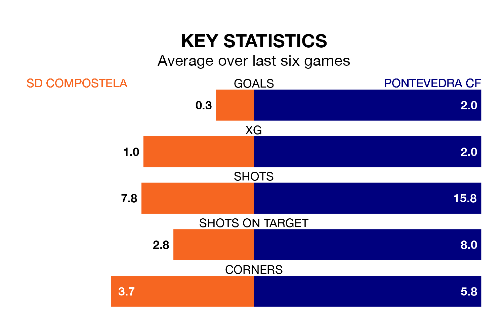

Pontevedra CF are strong favourites to take all three points despite SD Compostela's home advantage in Sunday's match at the Estadio Multiusos de San Lázaro.
*Betting Company* are offering odds of 2.0 on Pontevedra sealing the win, with the visitors sitting first in the Segunda División RFEF Group 1 table.
Compostela, who are eighth in the league and 23 points behind Pontevedra, are priced at 3.4 to win. A draw is set at 3.1.
With 64 goals in 30 games so far this season, Pontevedra are the league's highest scorers with 2.1 goals per game. And they are conceding fewer than average, letting in 25 goals at a rate of 0.8 per game.
Compostela, meanwhile, are below average scorers, with 0.9 goals per game, compared to a league average of 1.1. They have conceded 1.1 goals per game.
In the last 10 years, Compostela and Pontevedra have played each other on seven occasions. Compostela won two of them, Pontevedra one, and they drew four times.
On average, Compostela scored 1.1 goals and Pontevedra 1.0 in those matches.
Their last meeting was on December 3, when Pontevedra won 3-0 at home.
The hosts are in disappointing form in the Segunda División RFEF Group 1, with one win and two draws from their last six games.
With four wins and two draws over that period, the away side's form is much better – they have taken 14 points from 18, compared to Compostela's five.
Compostela's last match was on April 7, a 0-0 draw against Coruxo.
Pontevedra beat Covadonga 2-0 last time out, also on Sunday, with Dalisson de Almeida Leite on the scoresheet.
Updated: 10:01 (UTC), 12/04/24